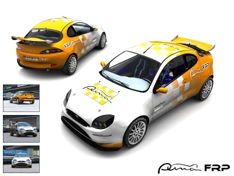
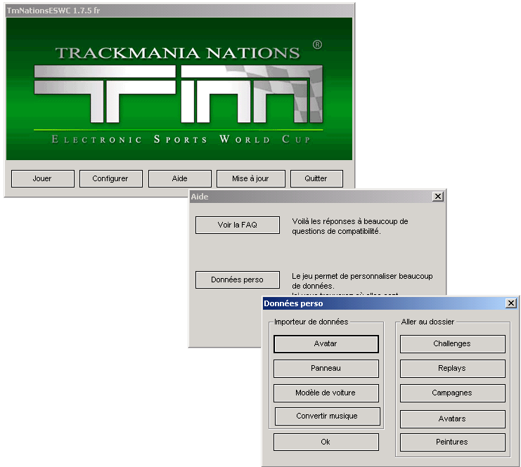
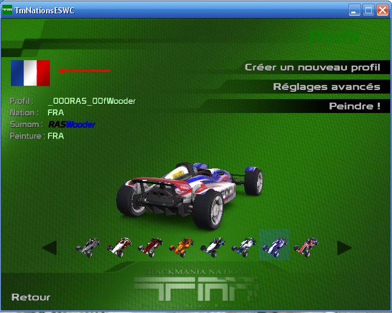
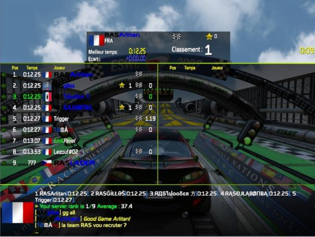
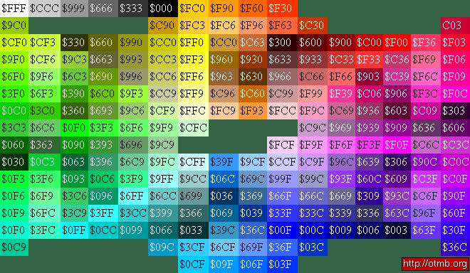
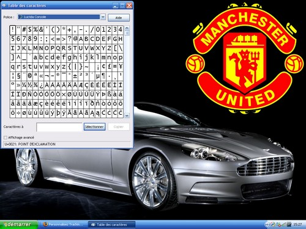

Vous connaissez sûrement le jeu Trackmania Nations : le SDZ en a souvent parlé, pour des soirées spéciales par exemple. Saviez-vous que l'on pouvait changer de voiture (ne plus avoir la formule 1), d'avatar (au lieu du drapeau) ? Ce tuto essaiera de vous expliquer comment faire.
Ce tuto que vous êtes en train de lire vous expliquera, au fur et à mesure, comment changer de voiture, d'avatar, ou de pseudo sous TMN. Vous ne savez pas ce qu'est TrackMania Nations ? Regardez ces deux liens :
Familiarisez-vous avec le jeu. Vous aurez sûrement remarqué que vous avez la possibilité de changer de couleur de véhicule : mais la F1 elle-même ne peut pas être changée sans un téléchargement de l'extérieur. Et c'est bien marrant la F1, mais au bout d'un moment ça lasse, :lol: surtout que des voitures totalement folles vous attendent ! Sachez que, pour que les modifications fonctionnent sur Internet (si vous ne voyez pas vos modifications), il suffit, lorsque vous êtes connecté, de cliquer sur "Montrer tous les serveurs", puis, à droite de l'écran, de cliquer sur "Avancé", "Compte" et enfin sur "Copier depuis le profil".
Avant de commencer, lisez attentivement ce qui suit :
Ceci ne concerne que la partie de personnalisation de la voiture et de l'avatar. Vous n'aurez pas besoin de lire ce qui suit si vous comptez lire uniquement la partie de coloration du pseudo. En fait, lorsque les développeurs de chez NADEO ont créé le jeu, ils comptaient surtout faire de la pub pour leurs autres TrackMania, payants. Je dirais que c'est le seul point noir du jeu. En réalité, pour que votre voiture soit visible par tous lors du jeu sur Internet, il faut authentifier son compte grâce à une clef. Et cette clef n'est pas délivrée gratuitement mais on les trouve... dans les boîtiers d'un TrackMania que vous aurez acheté (par exemple United, Sunrise, Original, etc...). Une fois cette clef en votre possession, rendez vous sur le site officiel de TrackMania Nations. Inscrivez votre identifiant ainsi que votre mot de passe que vous utilisez pour votre compte TMN. Vous arrivez sur la page d'accueil : descendez puis cliquez sur le lien "Authentifier son compte". Rentrez de nouveau vos identifiants puis la clef du jeu. Votre compte est authentifié ! :D Enfin vous n'êtes pas obligé de le faire, mais à ce moment-là vos voitures & avatars ne seront visibles... que par vous. :o C'est déjà ça ! ^^
Bon, vous connaissez maintenant un peu mieux TMN, nous allons pouvoir rentrer dans le vif du sujet : personnaliser sa voiture. Donc, petit rappel : votre voiture ressemble à ça :
A la fin du tuto, elle sera plutôt comme ça :

C'est pas mieux une belle Ford Puma ? :D C'est très facile de personnaliser sa voiture.
Bon d'accord, c'est facile, mais où les télécharger ?
Je n'ai pas trouvé beaucoup de sites où trouver des voitures compatibles avec TMN (car certaines sont faites pour TrackMania Sunrise, d'autres pour TrackMania Original, d'autres pour TrackMania United, etc...) et malheureusement elles ne sont pas interchangeables entre les versions de TM. D'ailleurs, si vous avez TrackMania United, allez sur Car-Park, qui contient une bibliothèque impressionnante de voitures mais non-compatibles TMN.
Sarl Madmax (Cliquez sur les news intitulées "'Arrivées de skins" et sur l'image.)
Vous voyez, il y a un large choix de voitures. De quoi vous amuser pendant un bout de temps ! Pour prendre un exemple, nous allons prendre la Ford Puma du début. Rien ne vous empêche de changer plus tard. ^^ Sachez que la manipulation est la même pour toutes les voitures.
Donc, téléchargez la Ford Puma ici. Ne la décompressez pas. Rendez vous ensuite dans le dossier d'installation de TMN : par exemple si vous l'avez installé dans le lecteur C, dans "Program Files" (c'est le plus courant), allez dans : C:\Program Files\TrackMania Nations ESWC\GameData\Skins\Vehicles\StadiumCar
Faites juste un copier/coller du fichier .ZIP dans le dossier. Démarrez TMN, allez dans le menu profil, puis vous avez une sélection de voitures à faire défiler. Sélectionnez la Ford Puma. C'est tout ! Vous pouvez la repeindre comme n'importe quelle voiture du jeu.
Bon, vous êtes un aventurier, vous voulez toujours aller plus loin ? OK, je vous annonce que vous pouvez changer l'avatar présent sur Internet. En fait, au lieu d'un bête drapeau, vous pouvez mettre une image, d'une taille maximum de 128*128 pixels, de format jpeg.
Et comment faire pour l'intégrer au jeu ?
Très simple : lorsque vous lancez le jeu, cliquez sur Aide > Données perso > Avatar puis vous sélectionnez votre fichier. Simple, non ? Allez, une petite image :

Lancez ensuite TMN, puis, toujours dans le menu profil, cliquez sur le drapeau :

Faites défiler les images : vous trouverez la vôtre, YOUPI ! Ensuite les autres joueurs pourront la voir sur Internet.

(C'est ma team ! :p Désolé j'ai pas pu m'en empêcher. ^^ ) Vous voyez donc les drapeaux normaux, et ceux personnalisés.
Petit plus : les GIFs animés sont pris en compte. Pour savoir comment créer un GIF animé, rendez-vous ici.
Bon, comme d'habitude, nous allons personnaliser une petite partie de votre compte TMN. Cette fois, c'est le pseudo. Nous allons apprendre comment mettredelacouleursurvotrepseudo et à utiliser des caractères spéciaux ! :p
Comme d'habitude, rendez-vous dans la partie profil de TMN. Dans la partie pseudo vous apparaît le pseudo que vous voulez faire afficher dans les parties Internet. Je vous propose de transformer ça : RASWooder -> RASWooder C'est pas super ? :lol:
En fait, le système de transformation de couleurs est très simple : chaque couleur est exprimée en une combinaison de 3 chiffres & lettres mélangées : et il faut mettre le sigle "$" devant la combinaison pour qu'elle soit prise en compte. Voici le tableau des combinaisons :

Il faut aussi savoir que l'on peut mettre en italique avec le sigle "$i" et en gras avec le sigle "$w", et ombragé avec le sigle "$s".
Quelques exemples :
$f00rouge = rouge
$00fbleu = bleu
$000noir = noir (par défaut)
$0f0vert = vert
$ff0jaune = jaune
$fffblanc = blanc
$wgras = gras
$iitalique = italique
etc ...
On peut très bien mélanger plusieurs codes :
$b$iPseudo = Pseudo
$f00Pse$00fudo = Pseudo
$b$fffPseu$i$00fdo = Pseudo
Bien sûr, il n'y a pas que bleu, rouge, blanc et noir comme couleurs : inspirez-vous du tableau des couleurs plus haut pour avoir d'autres couleurs, ou faites comme moi, au pif. ;)
Caractères spéciaux
Les caractères spéciaux sont utilisés pour rendre votre pseudo un peu plus beau et complexe. Comme vous l'avez vu dans l'exemple au début de la sous-partie, on pouvait écrire : RASWooder. Vous savez désormais comment mettre les couleurs et l'italique, c'est à dire comme ceci : RASWooder == $i$fffRAS$00fWooder . Malheureusement, je ne peux pas vous montrer ce que donne mon pseudo avec les caractères spéciaux : le SdZ ne les gère pas. :o Regardez sur la photo des avatars ci-dessus pour voir ce que cela donne. ;) Lancez TMN : allez (encore !) dans le menu profil, mais arrêtez-vous là : appuyez sur ALT+Entrée pour sortir du mode plein écran. Cliquez sur "Démarrer", puis sur "Executer" en bas à droite et, dans la barre, entrez charmap. Normalement, vous devez tomber sur ceci :

Choisissez ensuite le caractère qui vous plaît, double-cliquez dessus et choisissez copier : retournez sur TMN, cliquez dans le pseudo de votre profil, et faites juste Ctrl+V. Le caractère est copié !
Si vous avez parcouru quelques instants les serveurs de TMN, vous avez dû vous apercevoir, à côté des surnoms sur certaines personnes, qu'il y a une étoile couleur d'or avec un nombre qui varie. C'est tout simplement un vote d'un joueur vers un autre, pour prouver par exemple ses capacités, ou parce que c'est un ami.
À quoi ça sert concrètement ? On gagne plus de points avec ?
Non ! En fait, c'est juste pour avoir la classe. :p Le chiffre à côté de l'étoile représente le nombre de votes qui ont été réalisés pour cette personne. À n'importe quel classement, vous pouvez très bien en avoir une, ou plus.
Alors, pour voter, c'est très simple : retournez sur le site de NADEO, logguez-vous si ce n'est pas déjà le cas ; descendez, puis dans la section Hall Of Fame, remplissez la zone de texte par l'identifiant (et non pas le surnom !) de la personne, puis cliquez sur le "+" : votre vote est pris en compte !
Pour voir combien d'étoiles vous avez, revenez dans ce même Hall Of Fame et vous devriez voir quelque chose du genre:
Citation : trackmanianations.com
Vos étoiles : * (33 Jours d'étoile)
Bien entendu, le nombre d'étoiles et le nombre de jours peuvent être tout à fait différents. Alors "pourquoi 33 Jours d'étoiles ?" me direz-vous. Tout simplement parce qu'il faut environ une vingtaine de jours avant que l'étoile ne soit affichée : c'est pour vous situer dans le temps. Sachez que plus vous aurez d'étoiles, plus le temps à attendre pour qu'elles soient affichées sera long.
Ce tuto a été corrigé aimablement par les Zcorrecteurs. Je laisse juste ce petit mot afin de rendre grâce à leur travail.
Merci d'avoir suivi ce tuto ! @ très bientôt sur les routes ;)
PS : Si vous voulez voter pour moi, mon pseudo est : Wooder93 ;) . Merci d'avance.